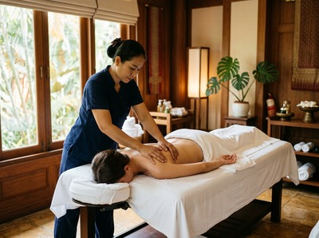

Most people reach for a massage when they're already at breaking point: the neck is seized up, the shoulders are somewhere around the ears, and the week has been one long slog.
That reactive approach helps, but it's only part of the picture. Regular massage for stress relief, built into a consistent routine, works differently — and more deeply — than a single one-off session ever can. Here's why it's worth making it a habit, not just an occasional treat.
Cortisol is the hormone your body releases under stress. In short bursts, it's useful. The problem is that modern life keeps cortisol levels high for too long.

Deadlines, commutes, poor sleep, and constant notifications push the system into a prolonged state of alert. Research published in the International Journal of Neuroscience found that massage therapy can reduce cortisol levels by up to 30%. At the same time, it raises serotonin and dopamine — the chemicals most closely linked to calm and stable mood.
The relaxed feeling after a session isn't just pleasant. Your body has measurably shifted its chemistry.
With regular sessions, that baseline starts to change. You're not just recovering from stress after the fact — you're reducing the load your nervous system carries in the first place.
At Glasgow Thai Massage, traditional Thai massage works along the body's sen energy lines. It uses acupressure and assisted stretching to engage the parasympathetic nervous system — the part of your body responsible for rest and recovery. It's one of the most effective ways to shift the body out of a sustained stress response.
Stress doesn't just live in your head. It lives in the tightness across your upper back, the jaw you clench without noticing, and the shallow breathing that's become your default.
Over time, these physical patterns become self-reinforcing. Tense muscles signal danger to the brain, which keeps the stress response running.
A sports massage or deep tissue treatment targets the deeper layers of muscle tissue and releases long-held tension. When the physical tension eases, the mental tension often follows. Clients who come in regularly for this kind of work frequently report better sleep, deeper breathing, and feeling less reactive to everyday pressures.
This is especially relevant for anyone working long hours in Glasgow's city centre offices. Desk posture compresses the chest, tightens the hip flexors, and strains the neck and upper spine. That physical state feeds directly into a low-level stress response that runs all day — without most people ever making the connection.
If you're ready to do something about it, book your session today and put the first one in the diary.
This is the part most people underestimate. A single massage can offer real relief, but the benefits tend to fade within a few days if the underlying stress load hasn't changed.
With regular sessions, something different happens: the body gradually recalibrates. Muscle tension doesn't return to quite the same level between appointments. The nervous system learns, over time, that it is allowed to rest.
Think of it like exercise. One run won't transform your fitness, but running consistently for six weeks genuinely will. The same logic applies here. Consistency shifts the baseline — it doesn't just offer short-term relief.
There's another dimension to this that doesn't get discussed enough. A massage session — particularly a Thai oil massage combining therapeutic touch with heated oils — creates the conditions for genuine mental stillness. No screens, no notifications, no decisions to make. Just an hour where nothing is required of you.
For most people in the middle of a stressful period, that kind of rest is rare. The brain doesn't switch off just because you're sitting on the sofa. It keeps planning, processing, and problem-solving.
Massage — especially at the hands of a skilled practitioner working with deliberate rhythm and pressure — tends to quiet that internal noise in a way that's hard to find elsewhere.
Maliwan, founder of Glasgow Thai Massage, trained at the Wat Pho Thai Massage School in Bangkok and has over 20 years of experience. She describes this as one of the most consistent things clients report: that the hour feels longer than it is, in the best possible sense. Time slows down when the body is truly at rest.
Chronic stress and poor sleep are closely linked. Each one makes the other worse. High cortisol disrupts the deep, restorative phases of sleep that allow the body and brain to recover properly.
When you're under-slept, your stress tolerance drops — and the cycle continues.
Regular massage helps break this cycle. It lowers cortisol, eases the physical discomfort that disrupts sleep, and calms an overactive nervous system. Many clients at Glasgow Thai Massage notice improved sleep quality as one of the first changes — often before the muscle tension itself has fully resolved.
If you want to explore the connection between massage, mental wellness, and sleep in more depth, our guide to massage and mental wellness covers the research in detail. The case for regular massage isn't just about relaxation. It's about giving your body a genuine, repeatable way to recover from the demands of modern life. Book online now and take the first step.
For stress management, most therapists recommend once every two to four weeks as a starting point. If you're carrying significant tension or going through a demanding period, weekly sessions can speed things up.
The key is consistency. Regular appointments — even monthly ones — produce better long-term results than the occasional session when stress peaks.
Traditional Thai massage is highly effective for stress. It engages the parasympathetic nervous system through rhythmic acupressure and assisted stretching, encouraging the body into a deep state of rest.
Thai oil massage is another strong option — the combination of therapeutic touch and warmth promotes quick relaxation. The best choice depends on your needs and what kind of tension you're carrying. A brief chat with your therapist before the session will help identify the right approach.
Yes. Research reviewed in the International Journal of Neuroscience has found that massage therapy measurably reduces cortisol — the body's primary stress hormone — while raising serotonin and dopamine. These aren't just feelings of relaxation. They are real chemical changes that can be measured in the bloodstream and saliva.
Single sessions show a clear effect, and regular sessions appear to support a lower baseline cortisol level over time.
Absolutely. Traditional Thai massage is performed fully clothed on a comfortable mat — no oils, no need to undress. The therapist guides the session entirely, so there's nothing you need to do except relax and let us know if any pressure feels too strong.
Many first-time clients are surprised by how comfortable and natural it feels. If you have any specific concerns, the therapist will take a few minutes before the session to understand your needs.
Many people notice an immediate shift after their first session: a quieter mind, looser muscles, and a sense of calm that can last a day or two. More significant changes — in baseline stress levels and sleep quality — typically emerge after three to six consistent sessions.
Think of it as progressive rather than instant. Each session builds on the last, and the benefits grow the more regularly you come in.